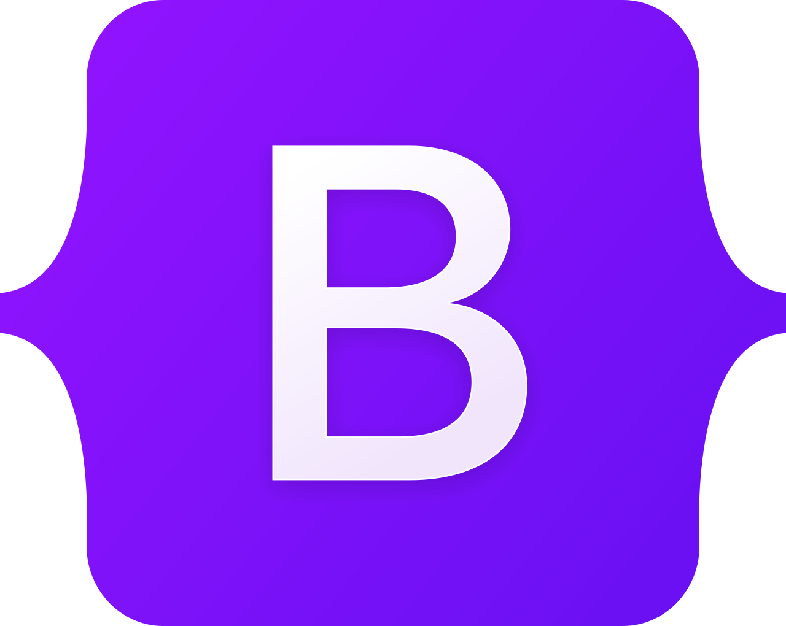
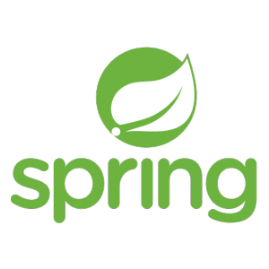
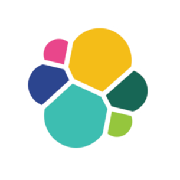
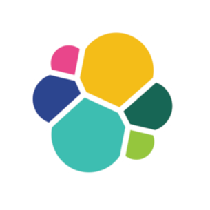

Curriculum Vitae

Etat civil
Jonathan GRAFF
Né le 13 juillet 1985 à Strasbourg
Formation
| 2022 : |
|
| 2021 : |
|
|
|
| 2009 : |
|
| 2008 : |
|
Expérience professionnelle
| 2023 à 2024: | Développeur Python backend Société Générale - Paris - service CIRRUS |
| Développement et maintenance d'une API pour distribuer et gérer les VM de la banque. Ecriture de tests d'intégration, mise à jour, déploiement. Stack technique : Python, Openstack, Docker, Git. |
|
| 2022 à 2023: | Développeur Python backend Société Générale - Paris - service DBMSP |
| Développement et maintenance d'une API REST permettant aux différents services de la banque la création et la gestion de leur base de données. Stack technique : Python, Flask, Celery, Git. |
|
| 2022 : | Ingénieur support niveau 2 - 6 mois (Freelance) Flowbird - Besançon |
| Analyse des problèmes back-end dûs aux horodateurs connectés et résolution
de ceux-ci ou transmission au service R&D. Recherche en base de données, lecture et analyse de logs. Création de programmes en Python pour simplifier les tâches répétitives. |
|
| 2020 à 2021 : | Stage de master Laboratoires Icube - Illkirch |
| Utilisation des algèbres géométriques pour implémenter en Coq des algorithmes de pilotage de bras de robots (détails ici) | |
| Projet de master 2 Université de Strasbourg |
|
| Apprentissage par renforcement profond pour des problèmes d’analyse combinatoire (détails ici) Implémentation en Python grâce à la librairie Tensorflow d'un agent qui a appris à se déplacer dans une grille grâce à un système de récompense pour pouvoir trouver un "trésor" en évitant des obstacles et des "bombes". |
|
| Stage de master 1 Université de Strasbourg |
|
| Implémentation en Typescript d’un algorithme permettant à partir d’une surface de la déformer par itérations en surface minimale. (détails ici) | |
| 2008 à 2021 : | Professeur agrégé de mathématiques en lycée et classes préparatoires Strasbourg - La Havane (Cuba) |
| Enseignement des mathématiques et de l'informatique en lycée et en classes prépas Onze ans à Strasbourg et deux ans au lycée français de la Havane à Cuba, dans un contexte très international. Mise en place de l'enseignement des algorithmes et de Python aux élèves, ainsi qu'aux professeurs. Conception et correction régulière d'exercices et d'activités intéréssants et adaptés sur les mathématiques et sur l'algorithmique (triangles de Sierpinski, calcul d'aire avec Monte-Carlo...). |
Compétences
- Informatique :
- Langages informatiques :Python, Java,HTML, CSS, Javascript, C, C++, Typescript, calcul parallèle (MPI)


- Frameworks et librairies Python : Flask, Django, Kivy, Unittest, Tensorflow, Keras, Sklearn, Panda, Numpy, Matplotlib


- Autres frameworks et librairies :Bootstrap, JQuery, Spring
  - Bases de données : SQL, PostgreSQL, Elastic, Oracle, Azure, AWS. Dbeaver

 



- Autres : Linux, Windows, Git, Docker, Postman, Salesforce, Jira, Celery, intégration continue, méthodes Agile


- Mathématiques :Data, Statistiques, Deep-learning, Réseaux de neurones, Modèles aléatoires, Traitement du signal, Traitement de l’image, Graphes, Calcul scientifique, Optimisation
Langues parlées
-
Français: langue maternelle
-
Anglais: bilingue
 Espagnol: très bonne maîtrise
Espagnol: très bonne maîtrise- Allemand : notions
 Russe : notions
Russe : notions